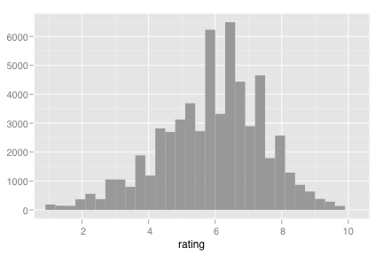
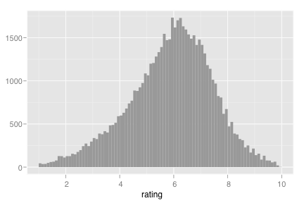
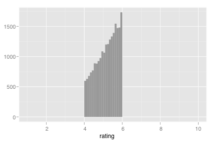
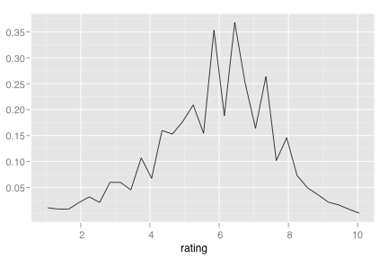
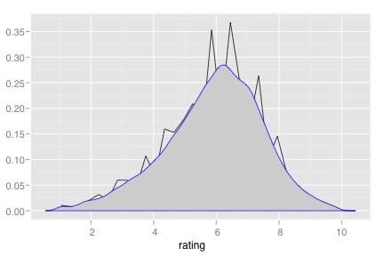
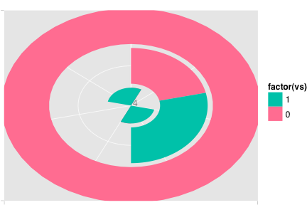
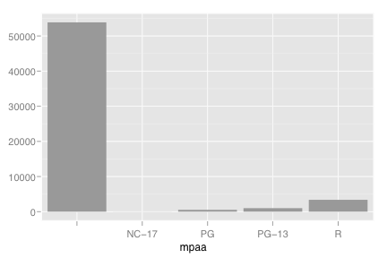
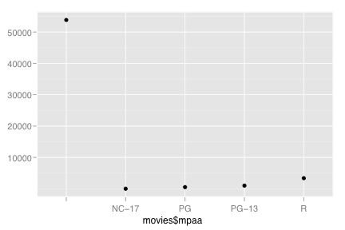

stat_bin
Bin data
Details
Aesthetics
The following aesthetics can be used with stat_bin. They are listed along with their default value. All geoms and scales can also use the group aesthetic. Read how this important aesthetic works in scale_group. Typically, you will associate an aesthetic with a variable in your data set. To do this, you use the aes function: stat_bin(aes(x = var)). Scales control the details of the mapping between data and aesthetic properties; after each aesthetic are listed scales that can be used with that aesthetic. The scale documentation will also provide references to help you interpret the default values.
Instead of mapping an aesthetic to a variable in your dataset, you can also set it to a fixed value. See the parameters section for details.
y:
..count..(scales: continuous, date, discrete, pow, prob)
Parameters
When an aesthetic is used an a parameter, like stat_bin(binwidth = 3), it will override mappings from data.
binwidth, Bin width to use. Defaults to 1/30 of the range of the data.breaks, Actual breaks to use. Overrides bin widthwidth, Width of bars when used on categorical data
Default geom
geom_bar. Override with the geom argument: stat_bin(geom="point").
Examples
> m <- ggplot(movies, aes(x=rating)) > m + stat_bin()  > m + stat_bin(binwidth=0.1)  > m + stat_bin(breaks=seq(4,6, by=0.1))  > # See geom_histogram for more histogram examples > > # To create a unit area histogram, use aes(y = ..density..) > (linehist <- m + stat_bin(aes(y = ..density..), geom="line"))  > linehist + stat_density(colour="blue")  > > ggplot(mtcars, aes(x=factor(cyl), fill=factor(vs))) + layer(stat="bin", position="stack") + coord_polar(theta="y")  > > # Also works with categorical variables > ggplot(movies, aes(x=mpaa)) + stat_bin()  > qplot(movies$mpaa, stat="bin")  > src "\n"